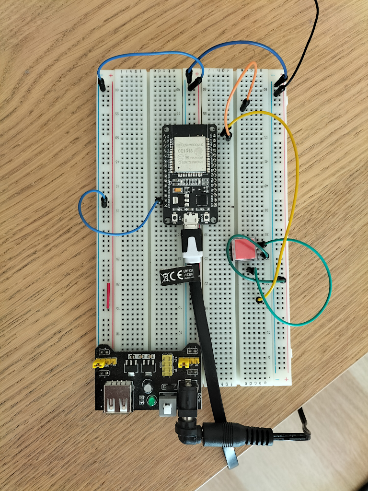
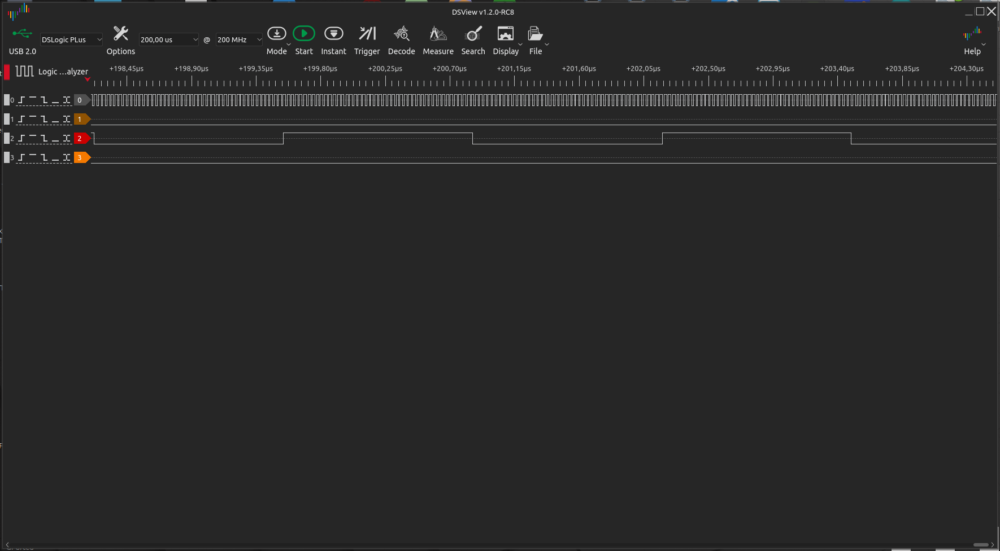
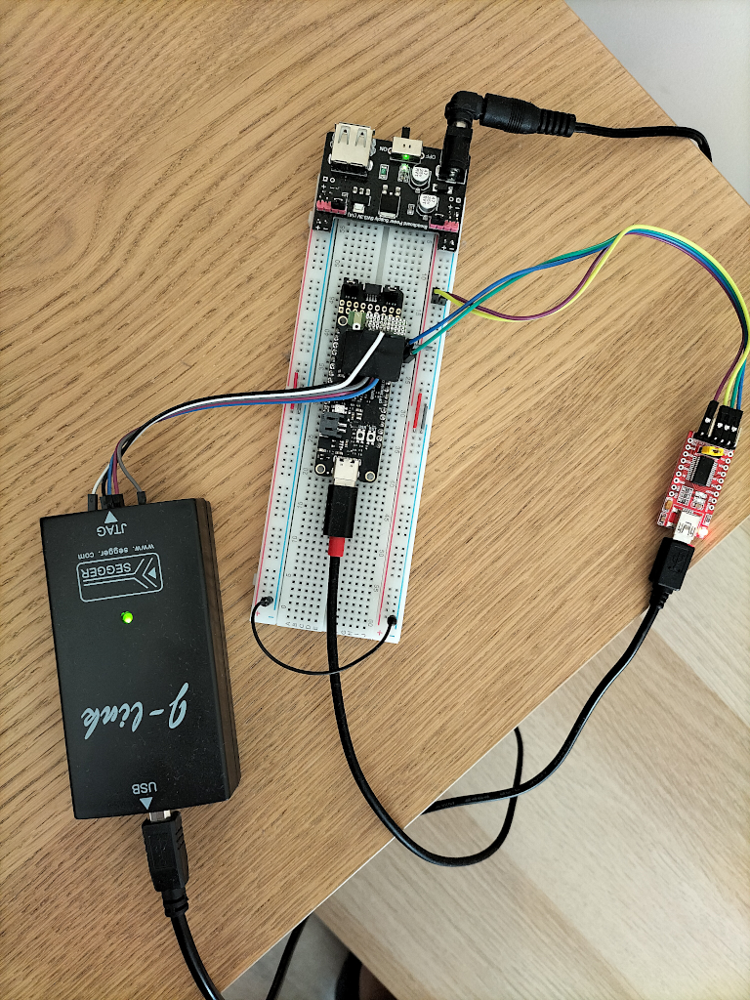
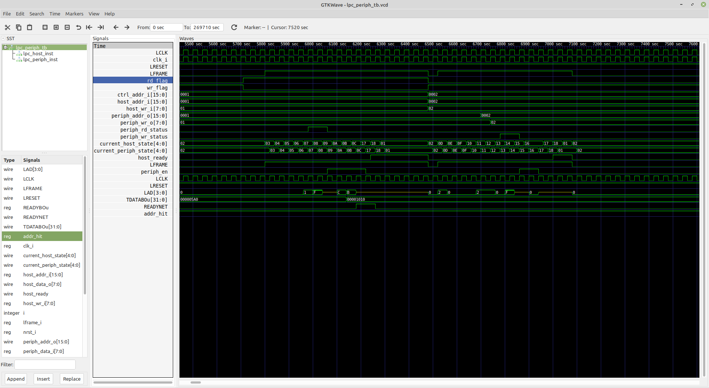
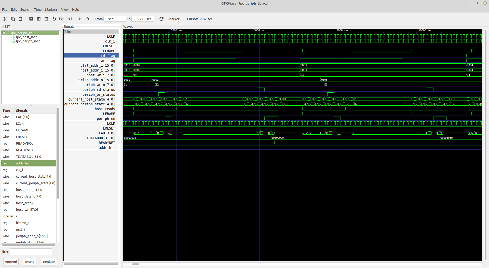
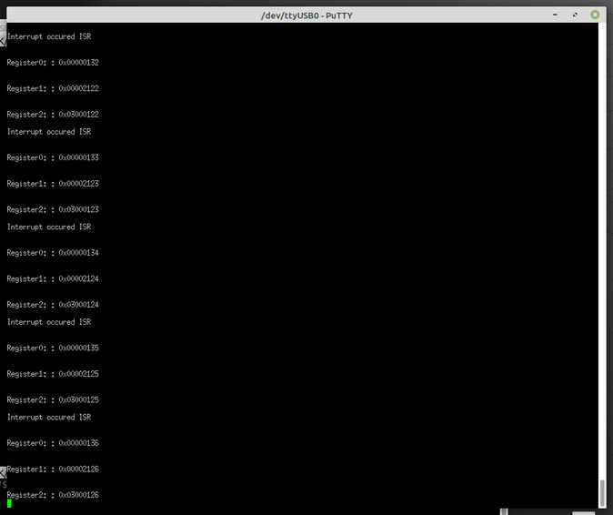

LPC driver - implementation
Introduction
The main goal of this document is showing the current state of development of the LPC driver for use in the lpnTPM project.
Motivation
Even though the SPI interface for the TPM module is more and more popular, the
LPC (Low Pin Count) interface is still widely used as a way to connect TPM
module to the mainboard. We have considered possible hardware platforms in the
past in
this document.
While the SPI and I2C interfaces are available on each microcontroller out there, the LPC hardware block is nearly not available on the generally-available microcontrollers, which raises some challenge here.
LPC implementation via GPIO
At first, we have attempted to implement the LPC interface on MCU via GPIO.
The LPC requires 33MHz clock, which might be challenging for a typical MCU.
Initially we have used Nucleo L476 which is clocked at 80MHz. We have decided
to use some other board for this test, instead. ESP32-WROOM32 board has been
chosen as the hardware platform here. This hardware has dual-core Tensilica LX6
with 240 MHz clock and 512 KB SRAM, which is quite a powerful MCU. Here is a
picture of test circuit which was used during our experiments:

We have started our test with a very simple application in Arduino IDE for
switching the output GPIO pin using an interrupt assigned to another GPIO
(Input) pin. There was a 33 MHz clock signal attached to this pin. In the
interrupt routine, the state of the output GPIO pin had been negated. Here
is screen-shot from logic analyzer software:

The signal in channel 0 is a 33 MHz clock, and the signal in channel 2 is an output GPIO pin. The maximum frequency of switching GPIO pins we could reach on this hardware was close to 380 kHz. The main reason for such bad results has been substantial latency in interrupts handling.
We have also considered some other versions of STM32 family MCUs, but based on the documentation, reaching the desired frequency would be very challenging as well.
Shift towards FPGA
Given that we would not be able to switch the GPIO pins fast enough in reaction
to the 33MHz clock, we have concluded that the better way of implementing the
LPC driver could be the use of a programmable device like an FPGA or CPLD.
But we also need a CPU for implementation of the TPM module logic and substantial amount of RAM. If we would use both MCU and FPGA on a single board, it would cause a major increase in the board's size. Fortunately, in the last years some SoCs (System on Chips) has appeared, which combine these two (MCU and FPGA) into a single chip.
Hardware selection
Requirements
The most serious issues in our previous attempts to implement the TPM module was shortage of the SRAM memory in the selected MCU. Based on that and our other previous attempts, we could outline the hardware requirements for a new chip:
- sufficient (>256kB) amount of SRAM,
- existence of a programmable logic (FPGA), as well as a fast bus connecting FPGA and MCU,
- efficient MCU with desired peripherals (such as SPI).
Another very important requirement (not strictly hardware-related) is the possibility of using open-source software for the applications development for this hardware.
EOS S3 SoC
Our candidate for a new hardware platform for this project is
QuickLogic EOS™ S3 MCU + eFPGA SoCs. It combines ARM Cortex-M4 MCU with 512
KB of SRAM (max. clock frequency is 80 MHz) and FPGA. FPGA and MCU are connected
by a fast Wishbone Bus and can handle interrupts from FPGA to MCU. The MCU
has many peripherals like SPI, I2C, UARTs, Timers, and so on.
Quicklogic EOS S3 MCU + eFPGA SoC had been chosen for the hardware part of
this project because it fulfills all requirements related to the amount of RAM
and overall performance. More description on this hardware can be found
here.
We carried out all development on an open-hardware board called
Sparkfun QuickLogic Thing Plus - EOS S3.
This board is based on Quicklogic EOS S3 SoC.
Some more references on this SoC and board:
- QuickLogic EOS S3 Ultra Low Power multicore MCU datasheet
- QuickLogic Thing Plus (EOS S3) Hookup Guide
Hardware setup
Below is picture of circuit used for development of this project:

It consist of the following parts:
Sparkfun QuickLogic Thing Plus - EOS S3board- breadboard
- power adapter
- J-Link JTAG programmer/debugger
- USB 2 UART converter
Note that in this photo we have used the SEGGER J-Link JTAG debugger for
programming and debugging, but one can use different JTAG debugger for this
purpose (such as the
Olimex ARM-USB-OCD-H
paired with OpenOCD.
Software setup
All development - both FPGA Verilog RTL part and ARM Cortex-M4 MCU development
had been carried out using Quicklogic QORC SDK.
QORC SDK consists of the
following parts:
- Symbiflow package for FPGA synthessis (Yosys) and
place and routetool for implementation and generation of bitstream for FPGA - GCC-cross compiler for ARM Cortex
- FreeRTOS
- Zephyr-RTOS
QORC SDK is fully open-source project.
Another useful tools used during development are:
These can be used to perform simulation of the implemented FPGA code.
Software repositories
Github repository with source code (Verilog RTL code) of LPC peripheral and
all files needed to perform simulation are located
in the lpntpm-lpc-verilog repository.
There are several files in this repository:
lpc_periph.v-LPC Peripheralimplementation in Veriloglpc_host.v-LPC Hostimplementation in Veriloglpc_defines.v- auxiliary file with definition of constants used in the implementationlpc_periph_tb.v- test-bench for theLPC Peripheralimplementation
Another source code repository is the
lpntpm-eos-s3-examples.
It contains applications (FPGA and ARM Cortex-M4 MCU) for the EOS S3 SoC.
Two applications are important here:
* test communication application
- used for testing the internal communication between FPGA and MCU parts
using the Wishbone bus and interrutps,
* LPC test application
- used for testing the LPC peripheral embedded into the FPGA part,
- application is reading LPC cycles, and displaying these cycles via UART in
the MCU part.
LPC driver implementation
Because in TPM part of a project we only need to handle the I/O or TPM cycles of
LPC protocol, we have develop a minimal implementation of the LPC Peripheral.
Before writing RTL code in Verilog, we have studied several open-source
implementations of LPC protocol, such as
this one.
The main reference for implementation of the LPC driver was Intel company LPC interface Specification document.
The implementation so far can handle following types of LPC cycles:
- I/O LPC cycles (1 byte)
- TPM LPC cycles (1 byte)
Other cycles of LPC protocol (such as Memory, Firmware, DMA) are not supported.
This implementation is based on a simple FSM (Finite State Machine) handling individual phases of the LPC protocol cycle. There is also code for handling I/O ports and internal signals states for every phase of the LPC cycle.
LPC Peripheral
I/O ports
Here is table with all I/O ports of the LPC Peripheral module:
| Direction | Type | Bus | Port name | Description |
|---|---|---|---|---|
| input | wire | clk_i | LPC clock (33,3 MHz) from LPC Host | |
| input | wire | nrst_i | Active-low reset signal | |
| input | wire | lframe_i | Active-low frame signal | |
| inout | wire | [ 3:0] | lad_bus | Multiplexed Command, Address and Data Bus |
| input | wire | addr_hit_i | ||
| output | reg | [ 4:0] | current_state_o | Current peripheral state (FSM) |
| input | wire | [ 7:0] | din_i | Data sent when host requests a read |
| output | reg | [ 7:0] | lpc_data_in_o | Data received by peripheral for writing |
| output | wire | [ 3:0] | lpc_data_out_o | Data sent to host when a read is requested |
| output | wire | [15:0] | lpc_addr_o | 16-bit LPC Peripheral Address |
| output | wire | lpc_en_o | Active-high status signal indicating the peripheral is ready for next operation. | |
| output | wire | io_rden_sm_o | Active-high read status | |
| output | wire | io_wren_sm_o | Active-high write status | |
| output | reg | [31:0] | TDATA | 32-bit register with LPC cycle: Address, Data(8-bit) and type of opertion |
| output | reg | READY | Active-high status signal indicating that new cycle data is on TDATA |
As one can see in I/O ports of the LPC Peripheral module, there are four
common signals of the LPC protocol (LPC Host is connected to `LPC Peripheral
by these lines). These signals are:
- clk_i
- nrst_i
- lframe_i
- lad_bus (this 4-bit bi-directional multiplexed bus)
Other signals are used to control the module and display information, or for internal purposes.
Details
- In line 42 of
lpc_periph.vsource is declared port:
inout wire [ 3:0] lad_bus
This is a bi-directional (and tri-state) 4-bit bus. This bus is multiplexed and in different time slots during handling of the LPC cycle this bus shows up various data (for example: 4-bit parts of LPC Address, LPC Data, etc.).
In source file lpc_defines.v are definitions of FSM states constants:
//---- FSM states definitions --------------------------
`define LPC_START 4'b0000
`define LPC_STOP 4'b1111
`define LPC_FW_READ 4'b1101
`define LPC_FW_WRITE 4'b1110
. . .
In lines from 133 to 203 of lpc_periph.v there is implementation of main FSM
(Finite State Machine) supporting transitions between different phases of LPC
protocol cycles:
always @(*) begin
if (nrst_i == 1'b0) fsm_next_state <= `LPC_ST_IDLE;
if (lframe_i == 1'b0) fsm_next_state <= `LPC_ST_IDLE;
case(current_state_o)
`LPC_ST_IDLE:
begin
if (nrst_i == 1'b0) fsm_next_state <= `LPC_ST_IDLE;
else if ((lframe_i == 1'b0) && (lad_bus == 4'h0)) fsm_next_state <= `LPC_ST_START;
end
`LPC_ST_START:
begin
. . .
In lines from 99 to 111 of lpc_periph.v there is always block in which is
determined when new cycle was started and when LPC cycle data are ready these
data are packed and copied to 32-bit TDATA bus:
if (wasLpc_enHigh) begin
cycle_cnt = cycle_cnt + 1;
if ((cycle_cnt > 1) && (cycle_cnt < 3)) begin
dinAbuf[31:28] <= 4'b0000;
dinAbuf[27:12] <= lpc_addr_o_reg;
dinAbuf[11:4] <= lpc_data_in_o;
dinAbuf[3:2] <= 2'b00;
dinAbuf[1:0] <= cycle_type;
if (dinAbuf==memoryLPC[0]) newValuedata = 1'b0;
else newValuedata = 1'b1;
TDATA <= dinAbuf;
memoryLPC[0] <= dinAbuf;
end
The format of the data on the TDATA bus is as follows:
- bits
[31:28]- filled with four zeros, - bits
[27:12]- placed 16-bitsLPC Address, - bits
[11:4]- 8-bitLPC Data, - bits
[3:0]- cycle type (direction), 1for write,0for read.
In this last always block is also worked out READY signal. When READY is
High (1'b1), it means that there is new cycle data on TDATA bus. In target
application for the EOS S3 SoC, cycle data from TDATA bus are sent by
the internal Wishbone to the MCU when this data is displayed on MCU UART.
Test bench
Test-bench for performing simulation of the LPC Peripheral module is
available in the:
lpc_periph_tb.v file.
Following fragment dumps file with wave forms (.vcd):
initial
begin
// Initialize
$dumpfile("lpc_periph_tb.vcd");
$dumpvars(0,lpc_periph_tb);
Following fragment is a main test routine - a for loop, generating 128 I/O
cycles (alternately write and read):
for (i = 0; i <= 128; i = i + 1) begin
// Perform write
#40 LFRAME_in = 0;
IO_Read_Flag = 0;
. . .
The accomplishment of simulation before tests on hardware (FPGA board) is very
important and we carried out this process in great detail. Manual on how to
simulate the LPC Peripheral module can be found in
this README.
Results analysis
 Let's first look at basic LPC protocol signals:
- clk_i is LPC clock 33,3 MHz
- LRESET is LPC reset - active low
- LFRAME - Low state marks new LPC cycle
- rd_flag - High state marks read cycle
- wr_flag - high state marks write cycle
- host_ready - tells that Host is ready to handle next cycle
- periph_en - tells that LPC Peripheral is ready for next cycle
What is also very important:
- current_periph_state[4:0] - this is 4-bit value of current peripheral FSM state
- current_host_state[4:0] - this is 4-bit value of current host FSM state
One can see that states on the LPC peripheral mimics the states from LPC Host and sequences of states for I/O read cycle and I/O write cycle are in accordance with states described in the LPC interface specification Conclusion: the basic LPC Protocol signals are correct in presented simulation.

On the second screen from GTKWave the time scale is a little different from
the previous screen. Important signals here are:
- host_addr_i[15:0] - this is LPC address on LPC Host
- host_wr_i[7:0] - this is 8-bit LPC data on LPC Host
One can see that these address and data with some delay appears on LPC
Peripheral signals:
- periph_addr_o[15:0] - received from Host LPC address
- periph_wr_o[7:0] - received from Host LPC cycle data
And finally, one can see that LPC Address and LPC Data appear with some
delay on TDATABou[31:0] - on this 32-bit bus are written LPC Address and
LPC Data as has been described above. READYNET signal indicates that there
is new data on TDATA bus. These two last signals (TDATA and READY) are
used for sending LPC cycle data from FPGA to the MCU part of the SoC
application.
Summing up: after watching the simulation of LPC Peripheral we have a solid
foundation to say that the tested circuit is working correctly.
EOS S3 applications
FPGA <--> MCU communication
The goal of this application if to test the communication between FPGA and MCU
by internal Wishbone (and using interrupts).
Quicklogic EOS S3 is rather complex circuit what you can see studying
it's Technical Reference Manual.
After reading this documentation we were missing a few important details that were needed to implement SoC application which can send data from FPGA part to ARM MCU program using internal bus. Frankly speaking, we needed bi-directional communication between FPGA and MCU in SoC. It wasn't clear how to generate all needed clocks, reset signals, set up interrupts in the FPGA part, and how to declare signals controlling the behavior of the internal bus.
Happily for us, one of employee of Quicklogic Corporation posted
in his Github repository
very valuable examples of applications for the EOS S3 SoC.
One of these examples
has been using such communication between FPGA and MCU parts of SoC. Based on
this, we wrote
simpler application
using comunication between FPGA and MCU using Wishbone, and interrupts from
FPGA to MCU.
In the AL4S3B_FPGA_Top.v: one can see that top module:
module AL4S3B_FPGA_Top (
// io_pad(s) from constraint file
io_pad
);
hasn't declared clock and asynchronous reset. We found that needed clocks and
other signals (for example resets, Wishbone bus signals, etc.) are injected
into the top module by use of the cell_macro primitive. cell_macro is part
of SoC hardware (Similiar to IP core). It gave us the explanation of things
that weren't clear before studying this example application. Here is the
cell_macro used for generating clocks and other important signals for SoC:
// Verilog model of QLAL4S3B
qlal4s3b_cell_macro
u_qlal4s3b_cell_macro
(
// AHB-To-FPGA Bridge
.WBs_ADR ( WBs_ADR ), // output [16:0] | Address Bus to FPGA
.WBs_CYC ( WBs_CYC ), // output | Cycle Chip Select to FPGA
.WBs_BYTE_STB ( WBs_BYTE_STB ), // output [3:0] | Byte Select to FPGA
.WBs_WE ( WBs_WE ), // output | Write Enable to FPGA
.WBs_RD ( WBs_RD ), // output | Read Enable to FPGA
.WBs_STB ( WBs_STB ), // output | Strobe Signal to FPGA
.WBs_WR_DAT ( WBs_WR_DAT ), // output [31:0] | Write Data Bus to FPGA
.WB_CLK ( WB_CLK ), // input | FPGA Clock from FPGA
.WB_RST ( WB_RST ), // output | FPGA Reset to FPGA
.WBs_RD_DAT ( WBs_RD_DAT ), // input [31:0] | Read Data Bus from FPGA
.WBs_ACK ( WBs_ACK ), // input | Transfer Cycle Acknowledge from FPGA
// SDMA Signals
.SDMA_Req ( {3'b000, 1'b0} ), // input [3:0]
.SDMA_Sreq ( 4'b0000 ), // input [3:0]
.SDMA_Done ( ), // output [3:0]
.SDMA_Active ( ), // output [3:0]
// FB Interrupts
.FB_msg_out ( {1'b0, 1'b0, 1'b0, FPGA_INTR[0]}), // input [3:0]
.FB_Int_Clr ( 8'h0 ), // input [7:0]
.FB_Start ( ), // output
.FB_Busy ( 1'b0 ), // input
// FB Clocks
.Sys_Clk0 ( Sys_Clk0 ), // output
.Sys_Clk0_Rst ( Sys_Clk0_Rst ), // output
.Sys_Clk1 ( Sys_Clk1 ), // output
.Sys_Clk1_Rst ( Sys_Clk1_Rst ), // output
// Packet FIFO
.Sys_PKfb_Clk ( 1'b0 ), // input
.Sys_PKfb_Rst ( ), // output
.FB_PKfbData ( 32'h0 ), // input [31:0]
.FB_PKfbPush ( 4'h0 ), // input [3:0]
.FB_PKfbSOF ( 1'b0 ), // input
.FB_PKfbEOF ( 1'b0 ), // input
.FB_PKfbOverflow ( ), // output
// Sensor Interface
.Sensor_Int ( ), // output [7:0]
.TimeStamp ( ), // output [23:0]
// SPI Master APB Bus
.Sys_Pclk ( ), // output
.Sys_Pclk_Rst ( ), // output <-- Fixed to add "_Rst"
.Sys_PSel ( 1'b0 ), // input
.SPIm_Paddr ( 16'h0 ), // input [15:0]
.SPIm_PEnable ( 1'b0 ), // input
.SPIm_PWrite ( 1'b0 ), // input
.SPIm_PWdata ( 32'h0 ), // input [31:0]
.SPIm_Prdata ( ), // output [31:0]
.SPIm_PReady ( ), // output
.SPIm_PSlvErr ( ), // output
// Misc
.Device_ID ( Device_ID ), // input [15:0]
// FBIO Signals
.FBIO_In ( ), // output [13:0] <-- Do Not make any connections; Use Constraint manager in SpDE to sFBIO
.FBIO_In_En ( ), // input [13:0] <-- Do Not make any connections; Use Constraint manager in SpDE to sFBIO
.FBIO_Out ( ), // input [13:0] <-- Do Not make any connections; Use Constraint manager in SpDE to sFBIO
.FBIO_Out_En ( ), // input [13:0] <-- Do Not make any connections; Use Constraint manager in SpDE to sFBIO
// ???
.SFBIO ( ), // inout [13:0]
.Device_ID_6S ( 1'b0 ), // input
.Device_ID_4S ( 1'b0 ), // input
.SPIm_PWdata_26S ( 1'b0 ), // input
.SPIm_PWdata_24S ( 1'b0 ), // input
.SPIm_PWdata_14S ( 1'b0 ), // input
.SPIm_PWdata_11S ( 1'b0 ), // input
.SPIm_PWdata_0S ( 1'b0 ), // input
.SPIm_Paddr_8S ( 1'b0 ), // input
.SPIm_Paddr_6S ( 1'b0 ), // input
.FB_PKfbPush_1S ( 1'b0 ), // input
.FB_PKfbData_31S ( 1'b0 ), // input
.FB_PKfbData_21S ( 1'b0 ), // input
.FB_PKfbData_19S ( 1'b0 ), // input
.FB_PKfbData_9S ( 1'b0 ), // input
.FB_PKfbData_6S ( 1'b0 ), // input
.Sys_PKfb_ClkS ( 1'b0 ), // input
.FB_BusyS ( 1'b0 ), // input
.WB_CLKS ( 1'b0 ) // input
);
As one can see there is much more than only clocks. There is one big
disadvantage related to using the cell_macro construct. This cell macro is
just a black box and we haven't any model of how it works. This fact makes it
an impossible simulation of FPGA is part of the application for SoC EOS S3,
so we can't determine this way if an application is working properly. We just
check if communication between FPGA and ARM Cortex-M4 MCU using Wishbone bu
to AHB bridge and interrupts using hardware.
In the AL4S3B_FPGA_ONION_LPCCTRL.v we have declared three 32-bit registers:
reg [31:0] BREATHE_0_CONFIG = 32'h00000010;
reg [31:0] BREATHE_1_CONFIG = 32'h00002000;
reg [31:0] BREATHE_2_CONFIG = 32'h03000000;
Then in the always block:
//-----------------------------------------------
cnt3 = cnt3 + 1;
if ((cnt3 >= 1024000) && (cnt3 < 1024900))
begin //period 1.25s
if (cnt3==1024000)
begin
BREATHE_0_CONFIG = BREATHE_0_CONFIG + 1;
BREATHE_1_CONFIG = BREATHE_1_CONFIG + 1;
BREATHE_2_CONFIG = BREATHE_2_CONFIG + 1;
end
TIMER_o = 4'b1111; //activate interrupt for MCU part
end
else if (cnt3 >= 1024900)
begin
cnt3 = 20'h00000;
TIMER_o = 4'b0000; //deactivate interrupt for MCU part
end
end
we periodically increment these registers, and set TIMER_o = 4'b1111 signal,
which is interrupt vector passed to MCU. When MCU gets this intterupt, it
programatically reads these registers by internal Wishbone to AHB bridge.
After short time, the interrupt in FPGA is deactivated:
TIMER_o = 4'b0000;
On the MCU side, there is a handler for message generated in the ISR. In RTOS task code we have such fragment:
case TIMERCTRL0_ISR:
dbg_str("\nInterrupt occured ISR\n");
uint32_t register0 = hal_fpga_onion_breath_getval_reg (22);
dbg_str("\n\n");
dbg_str_hex32("Register0: ", register0);
uint32_t register1 = hal_fpga_onion_breath_getval_reg (21);
dbg_str("\n\n");
dbg_str_hex32("Register1: ", register1);
uint32_t register2 = hal_fpga_onion_breath_getval_reg (18);
dbg_str("\n\n");
dbg_str_hex32("Register2: ", register2);
break;
When message is detected, the values of these three registers are read from FPGA and displayed by MCU UART.
Documentation on building and testing this application can be found in it's README.
After test application is built and loaded to hardware, we can see changing values via UART (incremented by one in cycle) of the three test register which are getting read from the FPGA:

Embedded LPC Peripheral
In the final step of this part of the development, we have embeded
LPC Peripheral developed previously into EOS S3 SoC application.
As mentioned before, we cannot simulate the FPGA part of the SoC application
because of the use of the cell_macro construction. But the LPC Peripheral
was simulated before, so it should not be a huge problem.
This application along with short documentation can be found in the lpntpm-eos-s3-examples repoistory.
What was changed in FPGA part of application:
-
In top module
AL4S3B_FPGA_Topwere additional ports of LPC protocol added:module AL4S3B_FPGA_Top ( // LPC Slave Interface lpc_lclk_top , // LPC clock 33 MHz (external from LPC Host) lpc_lreset_n_top , // Reset - Active Low (external from LPC Host) lpc_lframe_n_top , // Frame - Active Low (external from LPC Host) lpc_lad_in_top , // Bi-directional 4-bit LAD bus (tri-state) (external from LPC Host) // io_pad(s) from constraint file io_pad, //Wisbone bys clock 80 MHz clk80Mhz );// io_pad(s) inout wire [15:0] io_pad ; //Decreased from [31:0] // LPC Slave Interface input wire lpc_lclk_top ; // LPC clock 33 MHz input wire lpc_lreset_n_top ; // Reset - Active Low input wire lpc_lframe_n_top ; // Frame - Active Low inout wire [ 3:0] lpc_lad_in_top ; // Bi-directional 4-bit LAD bus (tri-state) //Wisbone clock output wire clk80Mhz; //Clock 80 MHz -
In module
AL4S3B_FPGA_IP, also ports of theLPC protocolhad been added:module AL4S3B_FPGA_IP ( // CLOCK/RESET CLK_IP_i, RST_IP_i, // AHB-To_FPGA Bridge I/F WBs_ADR, WBs_CYC, WBs_BYTE_STB, WBs_WE, WBs_RD, WBs_STB, WBs_WR_DAT, WB_CLK, WB_RST, WBs_RD_DAT, WBs_ACK, // io_pad io_pad, // FPGA Interrupts FPGA_INTR, // LPC Slave Interface lpc_lclk, // LPC clock 33 MHz lpc_lreset_n, // Reset - Active Low lpc_lframe_n, // LPC Frame - Active Low lpc_lad_in // Bi-directional 4-bit LAD bus (tri-state) ); -
During instantation of the
AL4S3B_FPGA_ONION_LPCCTRLmodule (in whichLPC Peripheralis embbeded) - these ports also had been added:AL4S3B_FPGA_ONION_LPCCTRL u_AL4S3B_FPGA_ONION_LPCCTRL ( // AHB-To_FPGA Bridge I/F .WBs_ADR_i ( WBs_ADR ), .WBs_CYC_i ( WBs_CYC_ONION_LPCCTRL ), .WBs_BYTE_STB_i ( WBs_BYTE_STB ), .WBs_WE_i ( WBs_WE ), .WBs_STB_i ( WBs_STB ), .WBs_DAT_i ( WBs_WR_DAT ), .WBs_CLK_i ( WB_CLK ), //80 MHz .WBs_RST_i ( WB_RST ), .WBs_DAT_o ( WBs_DAT_o_ONION_LPCCTRL ), .WBs_ACK_o ( WBs_ACK_ONION_LPCCTRL ), //System clk .Sys_clk ( CLK_IP_i ), //33 MHz //System reset .Sys_reset ( RST_IP_i ), // BREATHE signals .BREATHE_o ( FPGA_IP_LPC_o[31:0] ), // TIMER output interrupts .TIMER_o ( FPGA_INTR ), // LPC Slave Interface .lpc_lclk ( lpc_lclk ), // LPC Frame input (active high) .lpc_lreset_n ( lpc_lreset_n ), // LPC AD Output Enable .lpc_lframe_n ( lpc_lframe_n ), // LPC AD Input Bus .lpc_lad_in ( lpc_lad_in ), // LPC AD Output Bus ); -
In module
AL4S3B_FPGA_ONION_LPCCTRLI/O ports look like:module AL4S3B_FPGA_ONION_LPCCTRL ( // AHB-To_FPGA Bridge I/F WBs_ADR_i, WBs_CYC_i, WBs_BYTE_STB_i, WBs_WE_i, WBs_STB_i, WBs_DAT_i, WBs_CLK_i, //80 MHz WBs_RST_i, WBs_DAT_o, WBs_ACK_o, // System clk 33 MHz Sys_clk, //System reset Sys_reset, // BREATHE signals BREATHE_o, // TIMER signals TIMER_o, // LPC Slave Interface lpc_lclk, // LPC clock 33 MHz lpc_lreset_n, // Reset - Active Low lpc_lframe_n, // LPC Frame - Active Low lpc_lad_in // Bi-directional 4-bit LAD bus (tri-state) ); -
In lines from 289 there is instantation of developed earlier "LPC_Peri" module:
//*************************** // LPC Peripheral instantiation //*************************** lpc_periph lpc_periph_inst( // LPC Interface .clk_i(lpc_lclk), .nrst_i(lpc_lreset_n), .lframe_i(lpc_lframe_n), .lad_bus(lpc_lad_in), .addr_hit_i(i_addr_hit_sig), .current_state_o(o_current_peri_state_sig), .din_i(i_din_sig), .lpc_data_in_o(o_lpc_data_in_sig), .lpc_data_out_o(o_lpc_data_out_sig), .lpc_addr_o(o_lpc_addr_sig), .lpc_en_o(o_lpc_en_sig), .io_wren_sm_o(o_io_wren_sm_sig), .io_rden_sm_o(o_io_wren_sm_sig), //---------------------------------- .TDATA(TDATA_sig), .READY(READY_sig) );
Caution: currently in module AL4S3B_FPGA_ONION_LPCCTRL we have two clock
domains:
- one: with
WBs_CLK_i- it is 80 MHz internal SoC Wishbone Bus clock - second:
lpc_lclk- it is external 33 MHz LPC clock (from LPC Host)
Using multiple clock domains requires taking special steps in module implementation. For this reason, in module code (lines from 214 to 230) is generated signal clock enable for the LPC clock (33MHz):
/generating clock_33Mhz_enable signal
always @(posedge WBs_CLK_i)
begin
//if (WBs_CLK_i)
//begin
if (counter == divisor)
begin
counter <= 4'b0000;
clock_33Mhz_enable <= 1'b1;
end
else
begin
clock_33Mhz_enable <= 1'b0;
counter <= counter + 1'b1;
end
//end
end
Here is always block for generating interrupt signal from FPGA 2 MCU(this
interrupt cause that MCU reads register with LPC cycle data from FPGA):
// Logic for determine cycle type and send cycle data
always @( posedge WBs_CLK_i)
begin
if (clock_33Mhz_enable)
begin
if (READY_sig)
begin
BREATHE_0_CONFIG_TMP = TDATA_sig; //all cycle data sent in one 32-bit register
TIMER_o = 4'b1111; //activate interrupt for MCU part
end
else
begin
TIMER_o = 4'b0000; //deactivate interrupt for MCU part
end
end
else TIMER_o = 4'b0000;
end
Then, in C source file mininimal_task.c is code which handles interrupt from
FPGA and reads register from FPGA and decodes LPC Address, LPC Data, cycle type
and prints these data on MCU UART. BTW: in source file:
fpga/src/hal_fpga_onion_timerctrl.c is located code related to interrupts
handling.
As we mentioned earlier, we weren't able to simulate this code, because of using
cell_macro construct.
Further plans
The current development of this project is starting point for development of
full TPM hardware module with LPC protocol support.
In next steps we plan to:
- Test working LPC protocol with
EOS S3application on the Thing Plus board. We have implementedLPC HostVerilog module, which is needed for the test ofLPC Peripheralon hardware. We are going to runLPC Hoston second FPGA board connected by wires to theThing Plusboard and test correctness of operation of the LPC peripheral not only in simulation, but on real hardware as well. We also planning to writeTest GeneratorforLPC Hostas a Verilog module - which will be able to generate test signals. Moreover, we want to test thisLPC Peripheralmodule not only with testLPC Host, but also with real mainboard. - After determining that LPC cycles are properly detected and send to MCU in SoC application, we are going to extend it to send back response by LPC protocol lines in FPGA. We will define TPM registers in MCU and TPM cycles of LPC protocol should be able to write and read from these registers using LPC protocol.
- Next step is to develop full TPM module based on the Microsoft TPM module reference 2.0reference Microsoft TPM module source code, which would work with this TPM driver.